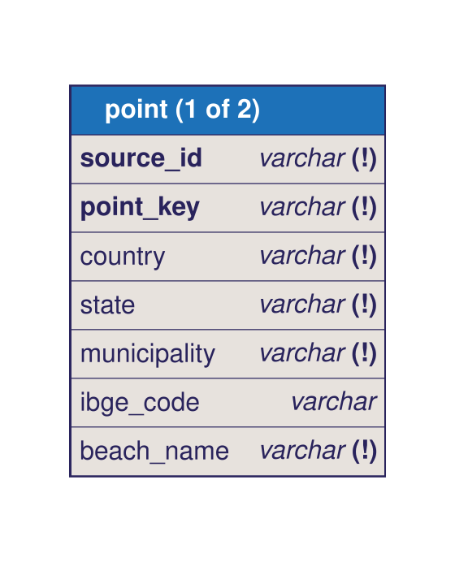
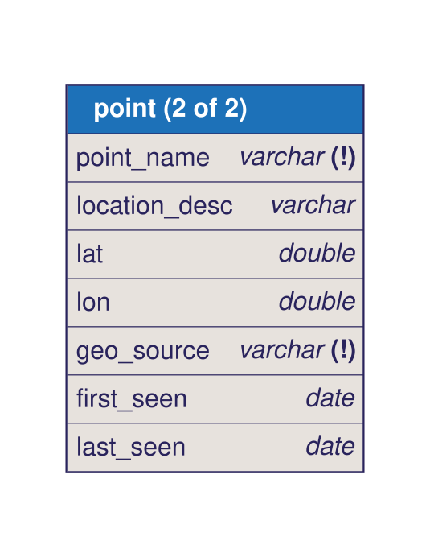
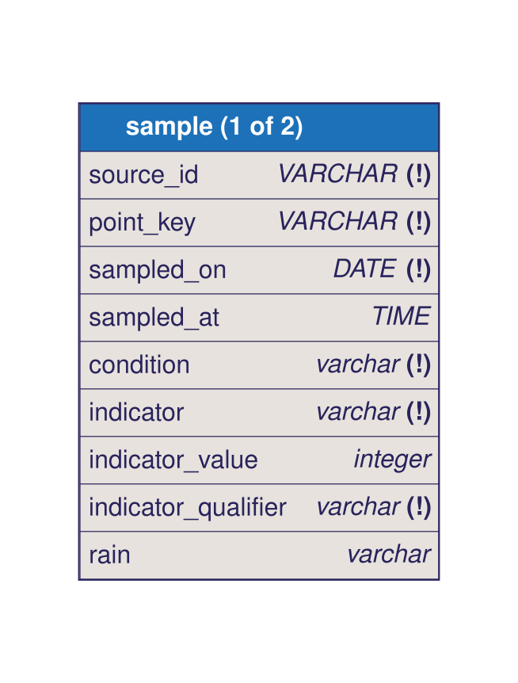
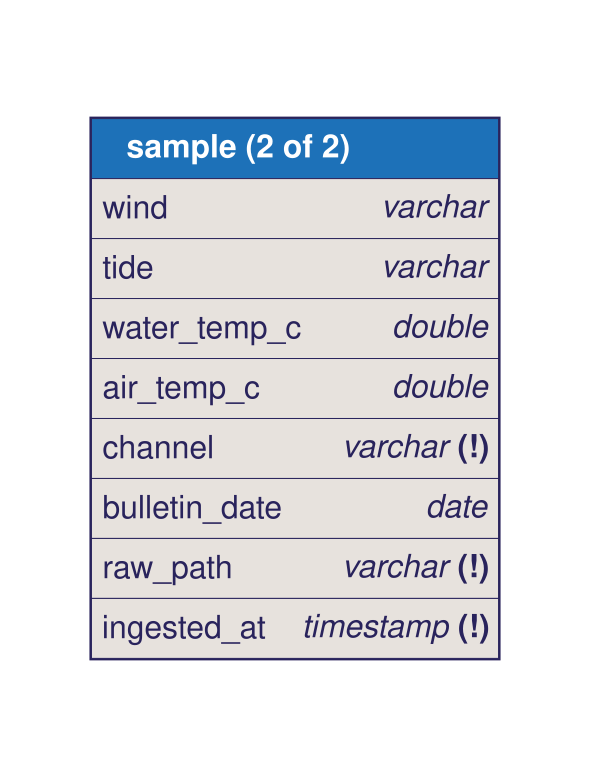

MIP-0056: OODS — an Open Ocean Data Store for Brazilian bathing-water quality, starting with IMA/SC¶
| Status | Draft — Tasks: docs/MIPs/MIP-0056.tasks.md |
| Author | Claude Fable 5.1, from M. Hoffmann's brief of 2026-09-14 ("production-grade data management for water quality … OODS … first step a GHA ingesting IMA/SC … incremental and backfill … STATE or CITY as a parameter, adapters per use case … a common view for all BR data") |
| Created | 2026-09-14 |
| Phase | 0 — an offline data pipeline and a versioned dataset; nothing waits on the Telegram bot, no cloud resource |
| Related | MIP-0001 (the IMA/SC feed and WaterQuality.scala's model — this MIP keeps its columns and adds history), MIP-0031 (INEA/INEMA PDF parsers and curated coordinate tables — the second and third adapters, §5.6), MIP-0016/MIP-0042 (the map's water layer — a consumer, via §5.5's export), local/src/main/scala/marola/water/CachedWaterQualityClient.scala (today's only persistence: one snapshot of the last five samples per point, gitignored), PHILOSOPHY.md "The Python question" (why the fetchers are Scala and the transform is SQL, §5.2/§9) |
| Effort | L — a new sbt module (oods/), one new dependency (DuckDB JDBC, in that module only), a CI workflow that commits, a .gitignore carve-out, and a one-off ~40 MB data PR. No change to the runtime path until §5.5's opt-in export |
| Gain | user value — 23 years of per-point history where today there are five samples: "this point is usually IMPRÓPRIA after rain", trends, seasonality (MIP-0001 §9 could only say "the agency's last five"); infra/dev-loop — the map's water layer stops depending on a portal that spent a week down in September, because the store is the fallback; cost/ops — a public dataset other people can query without running marola |
| Effort vs Gain | do next — the source is verified live, richer than what the app uses today, free, and the store is what every later state (§5.6) plugs into; the app-facing payoff (§5.5) is one environment variable |
| Depends on | Not blocked by any MIP. Reuses MIP-0031's parsers and coordinate tables for the RJ/BA adapters (§5.6, later tasks, not this MIP's first delivery). Needs one human-only configuration change before the workflow can commit: a ruleset bypass for GitHub Actions on main, or a PAT secret (§5.4, §11). No Phase 1 gate, no paid resource |
| Blocked by | none |
| Risk | IMA never published a licence for this data (§4.5, verified: no statement on the portal, not on dados.sc.gov.br). Republishing 23 years of it under an open licence in a public repo is a decision this MIP cannot take alone — §11 asks for it. Technically, the risk is a ~40 MB text tree on main that grows ~2 MB/year per state |
| Cost so far | — |
1. Summary¶
Build data/oods/: a git-versioned, everyone-can-read store of Brazilian bathing-water samples,
one adapter per monitoring institute, a common schema, and DuckDB SQL views that union every
state into one table. The first adapter is IMA/SC, fed by the portal's own per-beach CSV history
export (2003 → today, 13 columns, verified live 2026-09-14) rather than the five-sample JSON feed
or the weekly PDF. A GitHub Actions workflow runs it daily, idempotently, and commits only what
changed; a backfill mode fills the history once. Raw files are text and diffable; derived Parquet
is small and rebuilt deterministically. State, city and source are filters on the same planner.
2. Motivation¶
Today marola's only persistence for water quality is data/water-cache/ima-sc.json: the last
successful fetch, five samples per point, gitignored, overwritten. When IMA's host served a
self-signed certificate on 2026-09-08 and then nothing on :443, every Florianópolis beach read "no
data" until the PDF backup client landed (ImaScPdfWaterQualityClient). The data had not changed;
our copy of it was one file on one machine. Meanwhile the portal holds a history export nobody
in this repo had found: POST /relatorio/exportarCSV with municipioID, localID, ano returns
every sample for one beach and year since 2003, with wind, tide, rain, water and air temperature,
the bacteria count (censored values like <20 included) and the verdict, none of which the JSON
feed carries any more (its ANALISES array is gone; today it returns 260 points with coordinates
and a current CONDICAO only, verified 2026-09-14).
The brief also names the long-term shape: an Open Ocean Data Store, Brazil first, one adapter per institute, a common view. MIP-0031 already built two more parsers (INEA/RJ, INEMA/BA) with no place to accumulate what they parse. This MIP is that place.
3. User-visible change¶
Nothing in the CLI or the map changes in the first tasks, the deliverable is a dataset and a pipeline. Concretely, after §5.5's one-line opt-in the site build reads water quality from the store first, so a portal outage no longer blanks the water layer. For a person who is not a marola user:
$ duckdb -c "
SELECT beach_name, point_name, sampled_on, condition, indicator_value, rain
FROM read_parquet('data/oods/parquet/*/samples/year=*/*.parquet', hive_partitioning=true)
WHERE source_id='ima-sc' AND beach_name='Praia do Campeche' AND sampled_on >= '2025-12-01'
ORDER BY sampled_on DESC LIMIT 3"
┌───────────────────┬────────────┬────────────┬───────────┬─────────────────┬──────────┐
│ Praia do Campeche │ Ponto 35 │ 2025-12-29 │ propria │ 110 │ Moderada │
│ Praia do Campeche │ Ponto 35 │ 2025-12-16 │ propria │ 1314 │ Fraca │
│ Praia do Campeche │ Ponto 35 │ 2025-12-10 │ propria │ 10 │ Intensa │
Those three rows are real (§Appendix, campeche-2025.csv). The common view br_bathing_water
(§5.3) returns the same columns for every source once the RJ/BA adapters land.
4. Data sources and dependencies reviewed¶
4.1 The pick: IMA/SC's per-beach CSV history export¶
POST https://balneabilidade.ima.sc.gov.br/relatorio/exportarCSV with form fields municipioID
(the municipality name, e.g. Florianópolis), localID (the beach name, e.g. Praia do Campeche)
and ano. Verified 2026-09-14: HTTP 200 text/csv; charset=UTF-8, a UTF-8 BOM, 13 columns:
Municipio,Balneario,"Ponto Coleta",Localização,Data,Hora,Vento,Maré,Chuva,"Água (ºC}","Ar (ºC}","E. coli NMP*/100ml",Condição
- Enumeration endpoints, all
POST, empty body, no auth, JSON:/registro/anosAnalisados(24 years, 2003–2026),/municipio/getMunicipios(28),/local/getLocaisByMunicipio?municipioID=(143 beaches statewide; Florianópolis 43). Beach rows carry a beach-level coordinate; the point-level coordinates come from/relatorio/mapa(260 points, UUIDCODIGO, stable between the 2026-09-10 cache and today). - Coverage: 2003 → the current year; Campeche 2003 has 31 rows, 2025 has 145 (five points). Off-season sampling is monthly and in-season weekly, as the captured Campeche exports show (Appendix). The current year's export is as fresh as the HTML history page (both end 2026-08-25 for Campeche; the 2026-09-10 bulletin adds 10 points sampled 2026-09-08, none of them Campeche, so no channel is systematically ahead).
- Edge cases verified: a year with no data returns HTTP 200 and one row
…,1999,"Sem registros"; an unknownlocalIDreturns HTTP 200 with the header only (137 B). Both are "empty", not errors. - Volume: 143 beaches × 24 years = 3,432 requests; observed sizes 4–24 KB and 0.07–0.23 s each. Sequential with a polite 250 ms pause: ~20 minutes once. Rows: ~180 k statewide (estimate from Campeche's ~29 samples per point-year × 260 points × 24 years; early years are sparser).
- The CSV has no point id and no coordinates; the join key to the points feed is
(
Municipio,Balneario,Ponto Coleta), verified unique across all 260 live points.PONTO_NOMEalone is not unique (88 distinct names for 260 points, Appendix). - Not verified: whether the portal rate-limits (no
robots.txt, it 404s; no documented limit). The planner is polite by construction (§5.2) and the workflow is daily, not hourly.
4.2 Kept as a second channel: the weekly bulletin PDF¶
GET /relatorio/downloadPDF/YYYY-MM-DD. Verified 2026-09-14: the home page links the last 10
dated bulletins; 2026-08-28 returns a 322 KB PDF, 2026-09-11 (no bulletin that day) 404s. The
Wayback Machine's CDX index lists 192 unique dated bulletins (2023: 19, 2024: 86, 2025: 66, 2026:
21) and the oldest, 2023-03-10, has the same record layout ImaScPdfParser handles today. The
PDF carries the official report number, a verdict per point and the location text as of that
week (the CSV renders today's location text for every year). It carries no indicator value. It is
a later task (§5.2, task 7): the CSV alone delivers the history.
4.3 Rejected as the primary: the JSON feed /relatorio/mapa¶
It is the point registry (coordinates, IBGE municipality code, current verdict) and nothing else
now; ANALISES is gone (verified 2026-09-14: keys are BALNEARIO, CODIGO, CONDICAO, LATITUDE,
LOCALIZACAO, LONGITUDE, MUNICIPIO, MUNICIPIO_COD_IBGE, PONTO_NOME). It is fetched every run as
raw/ima-sc/points.json, overwritten, so git history is its time series.
4.4 Storage format: Parquet + SQL views, not SQLite, not Delta¶
The brief asked for SQLite, Delta or "Apache". Constraints: the store lives on main, must be
readable without marola, and must diff in a PR.
| Option | Verdict | Why |
|---|---|---|
| Raw text (CSV/JSON/NDJSON as fetched) | canonical | Diffable, reviewable, git blame-able; immutable per (beach, year) for past years, so one fetch, no churn; git's packfiles compress it ~4–5× |
Apache Parquet, Hive-partitioned by source_id/year |
derived, committed | Columnar, ~1–3 MB for 180 k rows, readable by DuckDB/pandas/polars/Arrow in every language; a past year's partition is rewritten only when its content hash changes (§5.3), so it does not churn either |
DuckDB SQL (schema.sql, views.sql) |
the DDL and the common view | Text, versioned, engine-portable enough; the union view over every source is a query, not a file |
| SQLite | rejected | One binary blob rewritten on every run; unreadable diffs, unmergeable conflicts; the runtime would gain a dependency to read it |
| Delta Lake (delta-rs) / Iceberg | rejected | Their value — ACID, concurrent writers, time travel — is what git already gives a single-writer dataset; a second versioning system, a Rust/Python-only writer, and a heavy JVM reader |
| Git LFS / release assets for raw | rejected for now | LFS makes the raw layer invisible to git diff and to forks; revisit if the tree passes ~200 MB (§8) |
DuckDB is available twice: python3Packages.duckdb/duckdb 1.5.5 in the flake's locked nixpkgs
(CLI for humans, just oods-sql), and org.duckdb:duckdb_jdbc on Maven Central (1.3.1.0 latest
per search.maven.org, 2026-09-14) for the build step. The two need not match: only Parquet files
cross the boundary, never a .duckdb file.
4.5 Licence and terms — the open question¶
No licence, terms of use, or open-data statement anywhere on balneabilidade.ima.sc.gov.br
(home page grepped for licença/termos/dados abertos/Creative Commons: none); robots.txt 404s;
dados.sc.gov.br's CKAN search for "balneabilidade" returns 0 datasets (all 2026-09-14). The data
is public administrative information under Lei 12.527/2011 (LAI), which is the basis every
Brazilian civic-data project cites, but that is not a licence grant. §11 asks for the decision.
5. Design¶
5.1 Layout on main¶
data/oods/
README.md what this is, how to query, provenance, licence
sources.json registry: id, institute, state, country, urls, cadence, licence status
manifest/ima-sc.json per raw file: url, sha256, bytes, fetched_at, rows; per partition: content hash
raw/ima-sc/
points.json the /relatorio/mapa registry, sorted by CODIGO, one point per line
csv/<municipio>/<beach>/<year>.csv exportarCSV bytes verbatim (BOM included) — slugs are ASCII
bulletins/YYYY-MM-DD.jsonl task 7: rows parsed from each weekly PDF; the PDF itself is not stored
parquet/ima-sc/
points.parquet
samples/year=YYYY/samples.parquet
latest/ima-sc.json §5.5: CachedWaterQualityClient's v1 format, the app's opt-in door
oods/sql/schema.sql build.sql views.sql the DDL and the common view — code, not data
.gitignore gains !/data/oods/ under the existing /data/* rule; runtime output
(sightings.jsonl, knowledge-index.json, water-cache/) stays ignored. The Docker volume at
/app/data is unaffected.
5.2 The pipeline — Scala fetchers, SQL transform, one planner¶
A new sbt module oods/ (.dependsOn(local), not aggregated into the runtime image)
with sbt oods/run behind just oods-ingest. Per PHILOSOPHY.md, Scala where the parsers and
HTTP helpers already are; Python only where its libraries are the only ones, here they are not
(§9). The transform is SQL because a DDL is the artefact people read.
package marola.oods
enum Channel derives CanEqual: case Csv, Pdf, Json // label/fromLabel, never ordinal (.claude/rules/scala.md)
enum Indicator derives CanEqual: case EColi, Enterococci, Unknown
enum Qualifier derives CanEqual: case Exact, Below, Above // "<20" → (20, Below): censored values are kept, not dropped
final case class SampleRow( // the common model — every adapter produces exactly this
sourceId: String, pointKey: String, sampledOn: LocalDate, sampledAt: Option[LocalTime],
condition: BathingCondition, indicator: Indicator, indicatorValue: Option[Int], qualifier: Qualifier,
rain: Option[String], wind: Option[String], tide: Option[String],
waterTempC: Option[Double], airTempC: Option[Double], channel: Channel, bulletinDate: Option[LocalDate])
final case class Partition(sourceId: String, channel: Channel, key: String, year: Int, immutable: Boolean)
final case class RawFile(partition: Partition, url: String, bytes: Array[Byte], fetchedAt: Instant)
trait SourceAdapter:
def source: Source // from sources.json
def partitions(plan: Plan): List[Partition] < Sync // IMA: enumerate municipality → beach → year
def fetch(p: Partition): RawFile < Sync
def rows(raw: RawFile): Either[ParseError, List[SampleRow]] // pure; unit-tested on captured fixtures
def points: List[PointRow] < Sync // the registry: key, names, coords, geoSource
final case class Plan(sources: Set[String], states: Set[String], cities: Set[String],
mode: Mode, fromYear: Int, toYear: Int, dryRun: Boolean, concurrency: Int)
enum Mode derives CanEqual: case Incremental, Backfill

Rules the planner (Ingest.plan, pure, tested) enforces, the same for every adapter:
- A partition is the unit of work and of idempotency. For IMA's CSV channel it is (beach,
year). A partition is
immutablewhen its year is older than the refetch window; an immutable partition already in the manifest is skipped without a request. Mutable ones (the current year, and the previous year whiletoday − 45 daysstill falls in it, late-December samples post in January) are refetched every run and written only when the bytes differ. - Incremental = mutable partitions only (≈ 143–286 requests, ~1 minute). Backfill = every
partition in
[fromYear, toYear]not in the manifest. Both are the same code path with a different filter; a backfill interrupted halfway resumes from the manifest. - Politeness: an explicit
User-Agent: marola-oods (+https://github.com/h0ffmann/marola), a 250 ms pause between requests to one host,concurrency≤ 4, retry on 5xx/timeouts with exponential backoff (3 attempts), and a 429/403 aborts the run rather than retrying. --state SC,--city Florianópolis,--source ima-scfilterpartitionsbefore fetching; a city that no adapter covers is an error, not an empty success.- Failure is visible: the run exits non-zero if any partition failed, after writing the ones that succeeded and their manifest entries, never a half-written file (write to a temp path, rename).
5.3 The DDL and the common view¶
oods/sql/schema.sql is the schema the Parquet files conform to; build.sql reads
raw/**/*.csv and points.json with DuckDB's read_csv/read_json and writes one partition
per year, sorted by (point_key, sampled_on, sampled_at), so equal input gives equal bytes.
The Scala side runs it through DuckDB JDBC and rewrites a partition only when the content hash
of its sorted rows differs from the manifest's, Parquet writer determinism is then a
nice-to-have, not a requirement (just oods-build twice must produce no diff; task 4 tests it).
CREATE TABLE point (
source_id VARCHAR NOT NULL, -- 'ima-sc'
point_key VARCHAR NOT NULL, -- source-native stable id: IMA's UUID CODIGO
country VARCHAR NOT NULL DEFAULT 'BR',
state VARCHAR NOT NULL, -- 'SC'
municipality VARCHAR NOT NULL,
ibge_code VARCHAR, -- MUNICIPIO_COD_IBGE when the source has it
beach_name VARCHAR NOT NULL,
point_name VARCHAR NOT NULL, -- 'Ponto 35'
location_desc VARCHAR,
lat DOUBLE, lon DOUBLE,
geo_source VARCHAR NOT NULL, -- 'feed' | 'curated' (MIP-0031's tables) | 'none'
first_seen DATE, last_seen DATE,
PRIMARY KEY (source_id, point_key));
CREATE TABLE sample (
source_id VARCHAR NOT NULL, point_key VARCHAR NOT NULL,
sampled_on DATE NOT NULL, sampled_at TIME,
condition VARCHAR NOT NULL, -- 'propria' | 'impropria' | 'unknown' (BathingCondition.label)
indicator VARCHAR NOT NULL, -- 'e_coli' | 'enterococci' | 'unknown'
indicator_value INTEGER, indicator_qualifier VARCHAR NOT NULL DEFAULT 'exact', -- 'exact' | 'below' | 'above'
rain VARCHAR, wind VARCHAR, tide VARCHAR, water_temp_c DOUBLE, air_temp_c DOUBLE,
channel VARCHAR NOT NULL, -- 'csv' | 'pdf' | 'json'
bulletin_date DATE, raw_path VARCHAR NOT NULL, ingested_at TIMESTAMP NOT NULL,
PRIMARY KEY (source_id, point_key, sampled_on, sampled_at, channel));
-- views.sql: the common view; every source's Parquet, one schema, channel precedence csv > pdf > json
CREATE VIEW br_bathing_water AS
SELECT s.*, p.state, p.municipality, p.beach_name, p.point_name, p.lat, p.lon
FROM read_parquet('data/oods/parquet/*/samples/year=*/*.parquet', hive_partitioning=true, union_by_name=true) s
JOIN read_parquet('data/oods/parquet/*/points.parquet', union_by_name=true) p USING (source_id, point_key)
QUALIFY row_number() OVER (PARTITION BY source_id, point_key, sampled_on, sampled_at
ORDER BY CASE channel WHEN 'csv' THEN 0 WHEN 'pdf' THEN 1 ELSE 2 END) = 1;
CREATE VIEW latest_per_point AS …; -- what CachedWaterQualityClient's export (§5.5) is built from
CREATE VIEW point_stats AS …; -- per point: n, share impropria, share impropria given rain ≠ Ausente
Both tables share the primary key (source_id, point_key[, …]); views.sql above joins them on
(source_id, point_key), which is why they are shown apart rather than one joined diagram (a
single canvas wide enough for both, at full column count, does not stay legible). Each table is
also split top-to-bottom across two panels, same reason: point's 14 columns and sample's 17
do not fit one legible panel at this row height. Column order matches the DDL above. point's
two-column key is marked pk on panel 1, where both its columns live; sample's five-column key
(source_id, point_key, sampled_on, sampled_at, channel) spans both panels and is not
re-expressible as a dbml index split across two separate fences, so it is left unmarked here —
the sql block above stays the one place it is stated in full.




Two rules the schema encodes on purpose: censored counts (<20, <10) keep their number and a
qualifier instead of becoming NULL, because "below detection" is information; and the indicator is
a column, because IMA's CSV header says E. coli while marola's WaterSample field is named
enterococciPer100ml, one of them is wrong for this source and the store must not inherit the
guess (§8, §11 follow-up).
5.4 The workflow: oods-ingest.yml¶
schedule: "0 12 * * *"(daily; IMA's bulletin days are irregular, the ten dates the index links fall on Tue ×5, Thu ×2, Fri ×2, Wed ×1, Appendix) plusworkflow_dispatchinputs:source(choice,ima-sc),mode(incremental/backfill),from_year,to_year,dry_run. Runs on${{ vars.CI_RUNNER || 'self-hosted' }}likesite.yml, same JDK/sbt/coursier cache steps,concurrency: oods-ingest, cancel-in-progress: false.- Steps: ingest → build →
just oods-check(schema, row counts, no duplicate keys, every sample's point exists) →git diff --quiet data/oods || commit. A run with nothing new commits nothing. Commit messagedata(oods): ima-sc <mode> <date> — <n> files, <rows> rows, withCost: $0(no agent) sojust cost-splitstays clean. - Committing to
mainneeds a decision (§11): themain-ruleruleset requires a pull request (verified via the API 2026-09-14; bypass only for the admin role). Either add the GitHub Actions integration as a bypass actor (keyless, preferred) or store a fine-grained PAT asOODS_PUSH_TOKEN. The alternative, a PR per run with auto-merge, collides withrequire_code_owner_reviewandCODEOWNERS's* @h0ffmann. ci.ymlis untouched: itsdorny/paths-filtermatches nothing underdata/, so a data-only push runs only the cheapchangesjob.site.yml's 3-hourly build picks the new store up on its next run once §5.5 is on.
5.5 The app reads the store — one environment variable, no new runtime dependency¶
build.sql's latest_per_point is exported to data/oods/latest/ima-sc.json in exactly
CachedWaterQualityClient's on-disk version: 1 shape (sorted, one point per line). Setting
MAROLA_WATER_CACHE_DIR=data/oods/latest in site.yml makes the store the fallback the map
already knows how to read: live feed → PDF → store, instead of live → PDF → last local fetch.
No DuckDB in local/, no image size change, AppConfig unchanged.
5.6 Rollout: state or city is a filter, an institute is an adapter¶
| Order | Source | Adapter input | Coordinates | Status of the source check |
|---|---|---|---|---|
| 1 | IMA/SC (ima-sc) |
CSV export per beach-year; PDF weekly | feed | verified live, this MIP |
| 2 | INEA/RJ (inea-rj) |
bulletin PDFs (listing page → newest), IneaPdfParser |
MIP-0031's curated table | verified in MIP-0031; no history export known — backfill = Wayback + listing archive, not checked |
| 3 | INEMA/BA (inema-ba) |
geraBoletim?idcampanha=N PDFs, InemaPdfParser |
MIP-0031's curated table | verified in MIP-0031; campaign ids walkable downward for backfill — not checked |
| 4+ | CETESB/SP, IAT/PR, FEPAM/RS, IEMA/ES, CPRH/PE | unknown | unknown | not checked — each needs its own §4 before an adapter; CETESB is rumoured to have a real open-data portal (not verified) |
Each adapter is one PR: a SourceAdapter, captured fixtures, a sources.json entry. The planner,
manifest, SQL and workflow do not change. --state RJ becomes meaningful the day inea-rj lands.
6. Scoring / safety impact¶
None. Nothing in Swimability or Recommender reads the store. §5.5 changes only which file is
the fallback when both live channels fail, and WaterQuality.fresh's 45-day rule still ages the
store's samples out on the agency's own dates.
7. Verification plan¶
Unit tests (all offline, on captured fixtures checked into oods/src/test/resources/ima-sc/):
ImaScCsvParserSpec, Campeche 2003/2010/2025/2026 fixtures: BOM stripped, quoted commas inLocalização,<20→ (20, Below),Sem registros→ empty, header-only → empty,PRÓPRIAandIMPRÓPRIA→ labels,dd/MM/yyyy+HH:mm; the join topoints.jsonby (municipio, beach, point) resolves every Campeche row to a UUID and a coordinate.IngestPlanSpec, which partitions each mode selects on a given date; the January rule; a manifest hit skips an immutable partition and never a mutable one;--citywith no adapter fails.ManifestSpec, round trip, sorted keys, byte-stable rewrite, atomic replace.IngestRunSpec, against a stubHttp: a second run over identical responses writes nothing; a 500 retries then records the failure and the run exits non-zero; a 429 aborts.OodsBuildSpec,build.sqlover the fixtures: row count, primary-key uniqueness, the channel precedence inbr_bathing_water, and two builds produce identical file hashes.LatestExportSpec,latest/ima-sc.jsonround-trips throughCachedWaterQualityClient.read.
Live checks, in order: just oods-ingest --source ima-sc --mode incremental --dry-run lists ≈143
partitions and fetches nothing; without --dry-run it writes them and a second run commits
nothing; just oods-ingest --mode backfill --from 2003 --to 2025 finishes with zero failures and
just oods-check passes; the workflow's dry_run dispatch is green; the first scheduled run
produces a commit on main with a diff a human can read. Done = all of §5.1 on main, the daily
run green for a week, and just oods-sql "SELECT count(*) FROM br_bathing_water" ≈ 180 k.
8. Risks, limitations, and honest caveats¶
- Licence (§4.5): the store republishes IMA's data; until §11's decision lands,
data/oods/ README.mdstates the source, the LAI basis and that IMA has granted no licence, no CC badge. - Names are the join key for the CSV channel. A beach renamed on the portal splits its history
into two
localIDs; a point renumbered breaks the (municipio, beach, point) join and the row is kept withpoint_key = NULL-free fallbackima-sc:<slug>andgeo_source = 'none'rather than dropped, visible injust oods-check's "unmatched" count. Localizaçãoin the CSV is today's text for every year; the PDF channel (task 7) is the only record of what a point's description was in a given week.- E. coli vs enterococci: the CSV header says E. coli; marola's field name says enterococci;
WaterQuality.scala's own doc comment quotes CONAMA 274/2000's enterococci limit, and the recollection that the resolution names both indicators with different limits is from memory (Not checked). Stored asindicator = 'e_coli'for the CSV channel with the header as the source;WaterSample's naming is a follow-up. - Repository growth: ~40 MB of raw text once, ~2 MB/year/state after; git packs it ~4–5×. Above ~200 MB in the tree, move raw to LFS and keep Parquet + manifest in git.
- A portal outage is not an error in the data: incremental runs simply commit nothing; the workflow's failure notifications are the signal, not "no data" on the map (§5.5).
- The PDF channel's Wayback backfill (192 bulletins) is a one-off download of roughly 60 MB (192 × the ~300 KB observed per bulletin, an estimate); the PDFs are not stored, only their parsed rows plus sha256 and URL in the manifest.
9. Alternatives considered¶
- Do nothing: keep the five-sample cache. Loses 23 years of history the portal already serves and leaves the map's water layer one outage away from blank.
- Python (
oods/package, DuckDB + pdfplumber), the natural ETL toolchain and the more familiar one for outside contributors. Lost onPHILOSOPHY.md's own rule: Python stays where its libraries are the only ones, and hereHttp,JsonValue,ImaScPdfParser,PdfLines,WaterQualityMatcher.normaliseand DuckDB JDBC all exist on the JVM; a second CSV/PDF parser in another language is exactly the duplicated safety-adjacent logic MIP-0042 §4.4 refused. The transform being SQL keeps the part contributors read language-neutral. Revisit if adapter contributors turn out to be Python-only people. - Store the weekly PDFs as the primary, what the app parses today. 300 KB binary each, no indicator value, and 2023-onwards only; the CSV is richer and text.
- A separate
oodsrepository, cleaner licence story and a smaller marola tree; but the adapters reuse marola's parsers and the map is the first consumer. Split later if the store outgrows the app (the layout in §5.1 is already self-contained under one directory). - SQLite / Delta / LFS, §4.4.
11. Open questions¶
- Licence decision (human): publish
data/oods/under CC-BY-4.0 with attribution to IMA/SC, ODbL, or no licence statement until IMA answers an e-SIC request? The first data PR (task 6) must not merge before this is decided. - Write access for the workflow (human): add the GitHub Actions integration as a bypass actor
on
main-rule, or createOODS_PUSH_TOKEN? The MIP prefers the bypass (keyless). data/oods/vs a top-leveloods-data/: the brief says "the.datafolder";data/is also the runtime volume. §5.1 nests underdata/oods/and carves it out of.gitignore.- Follow-up MIP:
WaterSample.enterococciPer100mlis named for an indicator IMA's own export labelsE. coli; resolving which CONAMA 274 threshold applies (and renaming the field) needs its own number. - Follow-up MIP: trend and seasonality features on the map and in replies ("usually improper
after rain"), the first consumer of
point_statsbeyond the fallback export. - Not checked: IMA's rate limits; whether
getLocaisByMunicipio's beach list ever drops a beach that still has history (a retired beach's CSV would then never be enumerated, the backfill should also iterate the historical municipality list from oldpoints.jsonsnapshots once they exist).
Appendix¶
Checked live (2026-09-14)¶
GET https://balneabilidade.ima.sc.gov.br/→ 200, links the ten newest/relatorio/downloadPDF/<date>(2026-07-07, 07-14, 07-23, 07-31, 08-04, 08-11, 08-18, 08-28, 09-02, 09-10, Tue, Tue, Thu, Fri, Tue, Tue, Tue, Fri, Wed, Thu); its JS names/relatorio/exportarCSV,/relatorio/historico,/municipio/getMunicipios,/local/getLocaisByMunicipio,/registro/anosAnalisados. No licence/terms text;/robots.txt→ 404.POST /relatorio/mapa(empty body) → 200, 85,318 B, JSON array of 260 points, keysBALNEARIO, CODIGO, CONDICAO, LATITUDE, LOCALIZACAO, LONGITUDE, MUNICIPIO, MUNICIPIO_COD_IBGE, PONTO_NOME; noANALISES;CONDICAO ∈ {PRÓPRIO, IMPRÓPRIO}; the 260CODIGOs equal the 2026-09-10 cache's ids; (MUNICIPIO, BALNEARIO, PONTO_NOME) unique;PONTO_NOMEalone has 88 distinct values.POST /registro/anosAnalisados→ 24 years, 2003–2026.POST /municipio/getMunicipios→ 28 rows{CODIGO, DESCRICAO}(both the name).POST /local/getLocaisByMunicipio× 28 → 143 beaches total, Florianópolis 43, keysBALNEARIO, CODIGO, LATITUDE, LONGITUDE, MUNICIPIO.POST /relatorio/exportarCSVFlorianópolis / Praia do Campeche / 2025 → 200text/csv, 23,600 B, 145 rows, header as §4.1; 2010 → 4,302 B, 29 rows, values<20; 2003 → 4,559 B, 31 rows; 2026 → 14,671 B, 90 rows, newest 2026-08-25, its off-season dates a month apart (07-01, 07-28, 08-25) while the 2025 export's December dates are a week apart (12-02, 12-10, 12-16, 12-29); 1999 → 200, one"Sem registros"row;localID=Nope→ 200, header only, 137 B. Bombinhas 2022–2024 → 12–20 KB, 0.07–0.23 s each.POST /relatorio/historico(same fields +redirect=true) → 200, 140 KB HTML, 162<tr>; newest 2026 date 2026-08-25 (= the CSV).GET /relatorio/downloadPDF/2026-08-28→ 200application/pdf322,717 B;/2026-09-10→ 316,927 B, collection dates 2026-08-24…27 (249 points) and 2026-09-08 (10);/2026-09-11→ 404.- Wayback CDX
url=balneabilidade.ima.sc.gov.br/relatorio/downloadPDF/*→ 192 unique dated bulletins (2023: 19, 2024: 86, 2025: 66, 2026: 21);id_fetch of 2023-03-10 → 318 KB PDF, sameNAME (Ponto NN)/ date / verdict / location record layout as 2026. dados.sc.gov.br/api/3/action/package_search?q=balneabilidade→ 0 datasets.gh api repos/h0ffmann/marola/rulesets/22344190→pull_requestrule on the default branch (squash only, 0 approvals, code-owner review, last-push approval), bypass: RepositoryRole 5 only;.github/CODEOWNERS=* @h0ffmann.- nixpkgs at
flake.lock's rev (0968519e…):python3Packages.duckdb1.5.5,duckdb1.5.5,pdfplumber0.11.10,pypdf6.15.0,pyarrow24.0.0,polars1.42.1. Maven Central:org.duckdb:duckdb_jdbclatest 1.3.1.0 (42 versions). - Repo:
.git17 MB, pack 8.74 MiB;/data/*gitignored except.gitkeep;data/water-cache/ima-sc.json85,953 B,version: 1, five samples per point.
Not checked¶
- CONAMA 274/2000's text: that it sets separate limits for E. coli and enterococci is from memory; only the enterococci figure already quoted in
WaterQuality.scalawas taken from the repo. - Any rate limit or fair-use policy on IMA's portal; the number of rows statewide (extrapolated from Campeche); whether the CSV's
E. coliheader reflects IMA's laboratory method or a template label. - Whether DuckDB's Parquet writer is byte-deterministic across runs of the same version (the design does not depend on it, §5.3).
- INEA/INEMA backfill mechanisms and every 4+ source in §5.6.
- The "git scraping" pattern (commit a scrape on every run, git history as the time series) that §4.4 follows, cited from memory, not re-read.